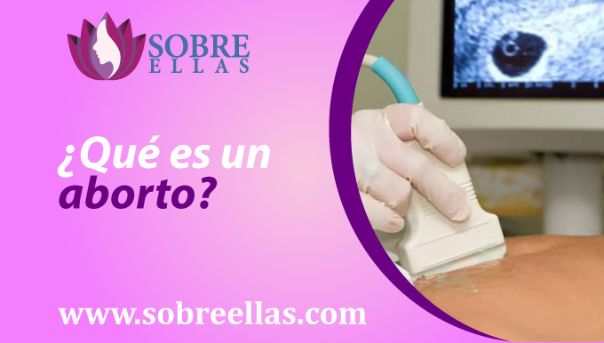
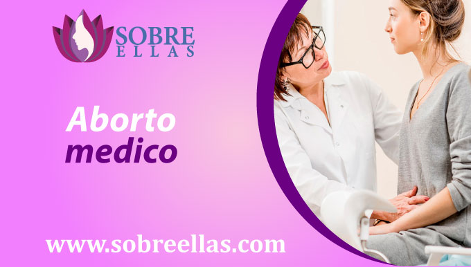
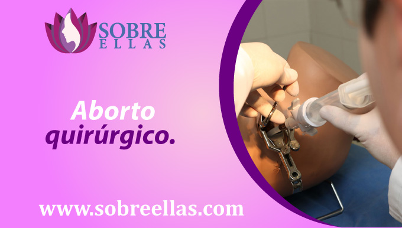
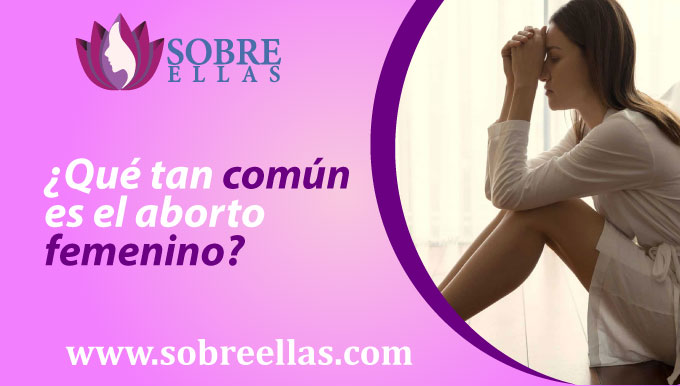

Yo decido
-
addContenido
Abortar puede no ser la decisión más fácil de tomar, decisión que es apoyada por un grupo de personas, así como criticada por otras En esta página estamos seguros de que como mujeres tenemos la libre decisión de elegir qué hacer con nuestro cuerpo. Si te encuentras frente a un embarazo no deseado y estás pensando en abortar, recuerda que solo tú tienes la decisión de elegirlo. Hay muchas razones por las que alguien podría optar por tener un aborto. Algunas personas pueden sentir que no pueden costear todos los gastos que tener a un niño demanda, o que no quieren ser padres. Otros pueden sentir que no pueden proporcionar un hogar amoroso para un niño,con ese espacio establemente emocional o que no tienen los recursos para cuidar de él, pueden sentir que su vida cambió debido a una violacion y no quieren tener un hijo que pueda verse afectado por ese trauma o que les recuerde a su violador. Entre las innumerables razones que puedan existir, cada persona es libre de tomar la decisión que considere adecuada para ellos. No hay una respuesta correcta o incorrecta, y todos deben tomarse su tiempo y pensar en lo que es mejor. Apoyamos a las personas que deciden abortar y ofrecemos los recursos necesarios para ayudarlas en este difícil proceso.
¿Qué es un aborto?
Un aborto es un proceso que en muchos casos se realiza de forma involuntaria y en otros a consentimiento. Consiste en poner fin a un embarazo sin importar el tiempo de gestación que tenga la madre, mediante distintos procesos médicos. Este proceso abortivo se comenzó a llevar a cabo simplemente para salvar la vida de la madre en caso ésta se encontrara en peligro a la hora de llevar el embarazo, lo que podría quitarle la vida, tanto a ella como al neonato de su interior, pero poco a poco esta técnica, también fue tomada en uso para casos como violaciones, etc. Generando de esa forma diversos enfrentamientos entre grupos que apoyan esa situación y otros que se encuentran en apoyo de la vida y vulneran el derecho de la mujer a decidir. Uno de los primeros paises en sumarse al apoyo del aborto legal es Estados Unidos, donde actualmente 1.3 millones de abortos aproximados se realizan cada año. Este número incluye cirugías y no cirugías, luego le siguió Canadá, el Reino Unido, Noruega, Dinamarca y Suecia, pero existe otros en los que hasta el momento no se ha dado por aprobado esta
Tipos de abortos
Hay dos tipos principales tipos de aborto femenino: quirúrgico y médico. Por lo general ambos procesos son llevados a cabo por la supervisión de un especialista en el sector salud, mientras que en otros es probable que lo realice cualquier persona que cree tener conocimiento del tema.
Aborto medico
Este tipo de aborto se realiza tomando una píldora que interrumpe el embarazo y es considerado como una forma segura y efectiva de darle fin a un embarazo no deseado. Como parte del procedimiento, se utilizan medicamentos para poner fin a un embarazo de forma no invasiva, rápida y segura. El beneficio principal y por la que muchas mujeres lo prefieren hoy en dia, es porque lo puedes llevar a cabo no necesariamente en un centro de salud o clínicas, donde te solicitan mucho papeleo y se utilizan implementos que pueden o no estar infectados, lo que provocaría una infección o hasta la muerte de la paciente que se someta.
Aborto Quirúrgico
El aborto quirúrgico es uno de los procedimientos mas conocidos y utilizado mediante una cirugía para extirpar al bebé. Este es un procedimiento por el cual un médico elimina el embarazo por dilatación y evacuación (D&E). Esto se realiza haciendo uso de instrumentos como una cureta, fórceps, tijeras o una aspiradora. Hay dos tipos de aborto quirúrgico: aborto en el primer trimestre y aborto en el segundo.
Riesgos al realizarte un aborto
Hay una serie de riesgos que vienen de la mano con la realización de un proceso abortivo, tanto física como emocionalmente.
- 1. Riesgos para su salud - Uno de los principales riesgos para su salud al realizar un aborto, es el potencial de infección. El aborto implica la eliminación de tejido, y como tal, puede ser un caldo de cultivo para las bacterias y otras infecciones. Si usted no tiene cuidado, esto puede conducir a problemas de salud graves.
- 2. Riesgos para su bienestar emocional Otro riesgo para su salud y bienestar emocional es el potencial de estrés. El aborto puede ser una experiencia muy emocional, y puede ser dificil llegar a un acuerdo. Si no estás preparado para esto, puede provocar sentimientos de estrés y ansiedad.
- 3. Riesgos para su salud mental El aborto también está asociado con una serie de riesgos para la salud mental. Por ejemplo, el aborto puede conducir a la depresión y la ansiedad. Además, el aborto puede ser una experiencia traumática, y puede conducir a problemas de salud mental a largo plazo.
- 4. Riesgos para su relación Finalmente, el aborto puede tener un impacto negativo en su relación.
Si estas planeando tener un aborto por un embarazo no deseado, ten en cuenta que es importante discutir la decisión con su pareja. Si no apoya la decisión, puede causar mucha tensión en la relación. En general, hay muchos riesgos asociados con la realización de un aborto. Sin embargo, al ser consciente de ellos, puede minimizar las posibilidades de que afecten su salud o bienestar emocional.
¿Qué tan común es el aborto femenino?
No hay una sola respuesta a esta pregunta, ya que la ejecucion del aborto varía de un país a otro, pero en general, se considera bastante común. Según la Organización Mundial de la Salud, a partir de este año 2008, hubo un estimado de 1,3 millones de abortos realizados cada año, en todo el mundo. Se espera que ese número aumente a medida que más y más países legalicen el aborto. En los Estados Unidos, el aborto se considera un procedimiento médico legal. De hecho, es uno de los pocos procedimientos médicos que está limpiamente permitido por la Constitución. Sin embargo, el aborto no está exento de sus críticos. Algunas personas creen que el aborto solo debe permitirse en casos de violación, incesto o cuando la vida de la madre está en peligro. Otros creen que el aborto solo debe permitirse en casos de anomalías fetales graves. En cualquier caso, el aborto es una decisión personal que debe ser tomada por la persona involucrada. No hay una respuesta correcta o incorrecta, ya que la situación de cada persona es única y no somos quienes para juzgar su posición, solo quedaría aconsejar, que para que se lleve a cabo lo ideal es una buena información para evitar diversos resultados negativos.
¿Puedo embarazarme después de un aborto?
Si has tenido un aborto hace mas de 3 o 4 semanas, ya haz reglado con normalidad nuevamente, es muy probable que te sientas realmente ansiosa y asustada. Debes de saber que si es muy probable que pueda quedar embarazada de nuevo, y puede ser confuso. En esta página te adjuntamos información que ayudará a aclarar algunas cosas. Es importante recordar que quedar embarazada después de realizarte un aborto, es probablemente una de las opciones mas seguras, si a su vez no se hace luz de anticonceptivos. Sin embargo, incluso si no queda embarazada de inmediato, eso no significa que esté condenada. Sabiendo eso, es necesario que sepan también, que existen también algunas cosas que puede hacer para aumentar sus posibilidades de quedar embarazada en el futuro. En primer lugar, es importante realizar un seguimiento de su ciclo menstrual para que de inmediato se descubra algún tipo de retraso, se pueda realizar una prueba para comprobarlo. Pero si por el contrario está usando anticonceptivos, es importante recordar que las use en cada acto sexual, incluso si no lo está usando específicamente con fines anticonceptivos. El uso de anticonceptivos cada vez que tenga relaciones sexuales ayudará a prevenir el embarazo. En segundo lugar, es importante cuidar de su salud. Si tiene algún malestar, dolencia o nota algún cambio en su cuerpo , es importante que reciba tratamiento para no disminuir la posibilidad de ser madre en caso lo desees.
¿Por qué las mujeres tienen abortos?

Existen innumerables razones por las que una mujer puede optar por tener un aborto. Algunas mujeres pueden encontrar que no quieren estar embarazadas o tener un bebé. Otros pueden haber tenido una mala experiencia con el parto o tener problemas de salud que creen que serían difíciles de manejar como madre. Algunas mujeres pueden tener problemas con su situación financiera y creen que tener un bebé significa un compromiso financiero a largo plazo. Si bien es cierto traer al mundo a un bebe, es una decisión que no se toma de la noche a la mañana, pero en caso estés pasando por una situación como esa y no sepas que hacer, no te sientas presionada saber qué hacer. La decisión la tomarás tú cuando solo tu decidas como.